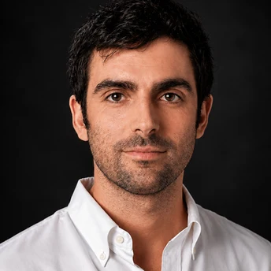
Andrea Agazzi
University of Bern
Imperial College London, South Kensington Campus
–
2026 / General information
The workshop will take place at 170 Queen’s Gate, an elegant Victorian venue in South Kensington.
Running for two and a half days, the programme begins on the morning of 23 November and continues through 25 November. The poster session takes place on 24 November, 16:00–18:00, in the Drawing Room.
If an email window does not open, use the copy icon and paste the address into your usual email app.
23–25 November / London
Three days of talks, discussion and posters. All times are local to London. Talks take place in the Council Room at 170 Queen’s Gate.
Loading the programme…
2026 / Confirmed
Meet the 14 researchers speaking at this year’s workshop. Explore their talks and abstracts in the programme.

University of Bern
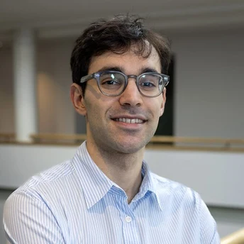
TU Munich
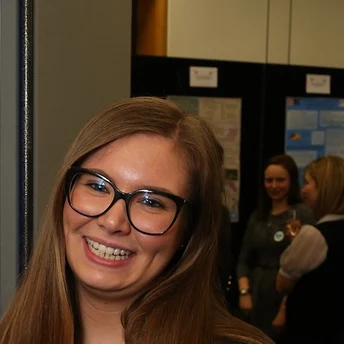
University of Turin
Imperial College London
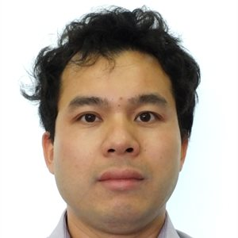
University of Birmingham
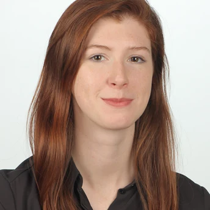
ENSAE Paris / CREST
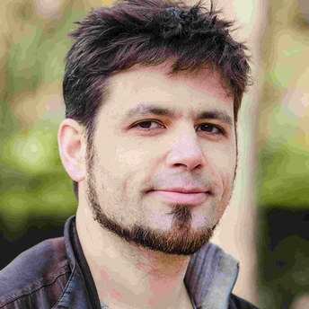
Université Gustave Eiffel
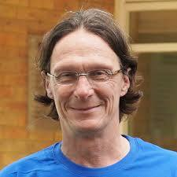
University of Potsdam
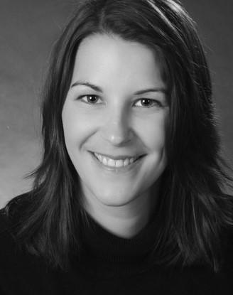
Freie Universität Berlin
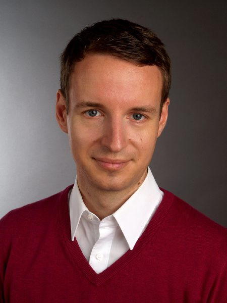
University of Ulm
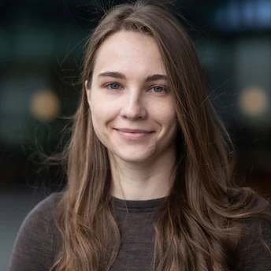
University of Amsterdam
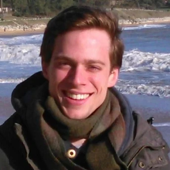
Inria Paris / CERMICS
University of Warwick
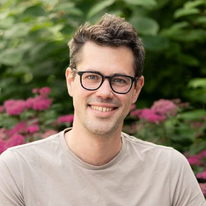
Inria / Université Grenoble Alpes
2026 / Accepted posters
Loading the accepted posters…
2026 / Registration
Registration and poster abstract submissions for the 2026 workshop are now closed.
Registration closed
We are no longer accepting registrations for the 2026 workshop. We look forward to welcoming registered participants to London.
Join the waiting list and we will contact you if a place becomes available.
Poster abstract submissions closed
As workshop registration is now closed, we are no longer accepting new poster abstracts.
Submission status Closed
Submission contents Title + short abstract
File format PDF · maximum 1 page
Printed posters: portrait orientation is recommended. The poster boards are 1 metre wide; please ensure your poster fits within this width.
Poster awards. We’re excited to recognise outstanding work presented in the poster session.
Already registered? If you are already registered and would like to present a poster, contact the workshop organizer.
If an email window does not open, use the copy icon and paste the address into your usual email app.
Past events / 01—02
Two editions have already brought together the community around continuous dynamics, probabilistic inference and machine learning.
A one-day exploration of gradient-flow approaches for sampling, inference and learning—from Langevin and Wasserstein dynamics to diffusion models, robustness and sequential Bayesian methods.
Speakers
The inaugural one-day workshop connected continuous dynamics with Bayesian posterior sampling, variational inference, generative modelling and deep-learning optimisation.
Speakers